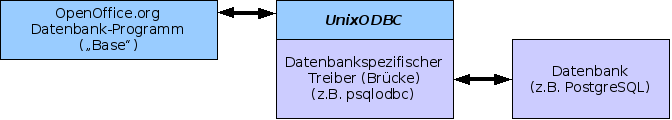

PostgreSQL-Datenbanken in OpenOffice.org 2.0 unter Linux
Übersicht
Dieses Dokument beschreibt die notwendigen Schritte um PostgreSQL-Datenbanken in OpenOffice.org 2.0 unter Linux einzubinden. Dazu wird auf die Open Database Connectivity (ODBC) Schnittstelle zurückgegriffen
Hinweis: Dieses Howto richtet sich an Nutzer, die sich bereits mit ODBC-Verbindungen und -Konfiguration auseinandergesetzt haben. Hier werden lediglich die Besonderheiten beleuchtet, die bei dem Einsatz von PostgreSQL von Relevanz sind.
Datenbankanbindung
Bei Einsatz der Datenkankanbindung werden insgesamt drei verschiedene Produkte von drei verschiedenen Herstellern verwendet. Wie in der Abbildung zu sehen ist, fungiert ODBC als Brücke zwischen PostgreSQL und OpenOffice.org. Dies ermöglicht eine standardisierte Schnittstelle, die beide Seiten beherrschen müssen.
PostgreSQL selbst ist dazu nicht in der Lage. Deshalb muss unixODBC einen Treiber (psqlodbc) laden, der die Kommunikation mit dem Datenbankmanager ermölicht.
Voraussetzungen
Um ODBC-Verbindungen zu etablieren sind neben OpenOffice.org 2.0 und PostgreSQL 8.1.0 folgende Pakete erforderlich:
- unixODBC
unixODBC ist für das Management der Datenquellen und der ODBC-Treiber, die von den jeweiligen Datenbankherstellern angeboten werden, verantwortlich.
- psqlodbc
Dieser ODBC-Treiber von der PostgreSQL-Webseite stellt die Schnittstelle zwischen der PostgreSQL-Datenbank und dem unixODBC-Manager dar.
Hinweis: Normalerweise sollte jede Linux-Distribution in der Lage sein, mit dem mitgelieferten Paketmanager die Pakete aus dem Repository zu installieren. Falls dies nicht möglich ist, kann es sein, dass Sie die betroffenen Pakete selbständig kompilieren müssen.
Konfigurieren von unixODBC
Zunächst ist der PostgreSQL ODBC-Treiber in die /etc/odbcinst.ini
einzutragen, falls dies nicht schon durch die Installation geschehen ist:
[PostgreSQL] Description = PostgreSQL ODBC Driver Driver = /opt/lib/libodbcpsql.so Setup = /opt/lib/libodbcpsqlS.so
Die Pfade sind je nach Ort der Bibliotheken anzupassen.
Als nächstes ist die Datei /etc/odbc.ini für systemweite
Datenquellen oder wahlweise die ~/odbc.ini für benutzerspezifische
Datenquellen anzupassen.
Es wird davon ausgegangen, dass eine Datenbank (hier im Beispiel pgtest) bereits existiert und auch Tabellen in dieser vorhanden sind.
[pgTestDBSource] Description = PostgreSQL Test Database Driver = PostgreSQL Servername = localhost Database = pgtest Port = 5432 ReadOnly = No
Bei Driver ist der Treibername einzutragen, der in der
odbcinst.ini als Sektion [PostgreSQL] definiert wurde.
Starten Sie nun den postmaster
Einbinden der Datenbank in OpenOffice.org
-
Starten Sie OpenOffice.org und erstellen Sie eine neue Datenbank mittels Datei - Neu - Datenbank.
-
Im Datenbank-Assistent wählen Sie die Option Verbindung zu einer bestehenden Datenbank herstellen und darunter ODBC aus der Dropdown-Liste aus. Klicken Sie auf Weiter >>.
-
Geben Sie in das Textfeld den Namen der Datenquelle ein oder klicken Sie auf Durchsuchen. Eine Liste mit verfügbaren Quellen wird angezeigt, woraus Sie eine auswählen können. Klicken Sie auf Weiter >>.
-
Bei der Benutzerauthentifizierung geben Sie den Benutzernamen ein, unter dem auch der Prozess postmaster läuft.
Wenn Sie ihn als den Benutzer gestartet haben, unter dem Sie sich auch an Ihrem System angemeldet haben, ist auch Ihre Benutzer-Passwort-Kombination vonnöten. Aktivieren Sie hierzu das Feld Kennwort erforderlich.
Sie können nun einen Verbindungstest mit Klick auf den entsprechenden Button unten rechts durchführen und anschließend mit Fertig stellen fortfahren.
Wenn der OpenOffice.org Datenbankbrowser erscheint, werden in der Kategorie Tabellen neben den eigens erstellen Tabellen auch sämtliche Systemtabellen angezeigt.
Sie können nun beginnen Tabellen zu bearbeiten, Abfragen, Formulare oder Berichte zu erstellen.
Hinweis: Bitte beachten Sie, dass OpenOffice.org Tabellen ohne Primärschlüssel nicht zum Editieren freigibt. Es ist auch nicht möglich, den Schlüssel in OpenOffice.org nachträglich einzufügen.
Public Documentation License Notice
The contents of this Documentation are subject to the Public Documentation
License Version 1.0 (the "License"); you may only use this
Documentation if you comply with the terms of this License. A copy of the
License is available at
//licenses/PDL.html.
The Initial Writer of the Original Documentation is Simon A. Wilper
Copyright (C) 2005. All Rights Reserved.